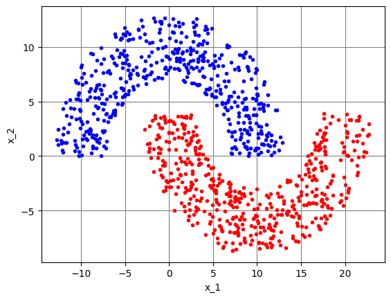
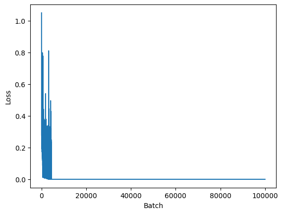
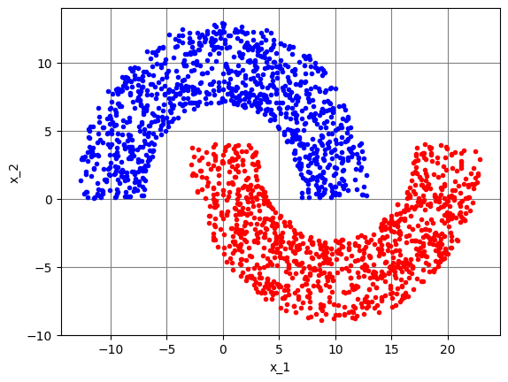
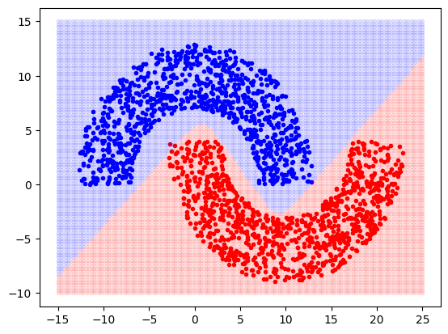
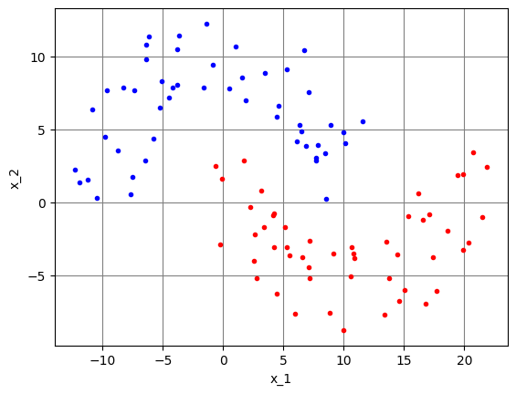
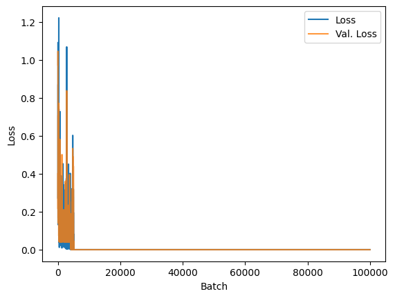

import numpy as np
import matplotlib.pyplot as plt
import torch
import torch.nn as nnImplementação da rede MLP com PyTorch
Segue a implementação comentada em PyTorch da MLP para solução do problemas das meias luas.
Treinamento sem a etapa de validação
Iniciando com a importação das bibliotecas:
# Fixando seeds para poder reproduzir os resultados
np.random.seed(111)
torch.manual_seed(111)
torch.cuda.manual_seed(111)Definindo a função para gerar dados para treinamento:
# Função para garar dados de treinamento
def meias_luas(NA, NB, r1, r2, r3):
"""
dados = meias_luas(NA,NB,r1,r2,r3)
NA: número de pontos da região A
NB: número de pontos da região B
r1, r2 e r3: dados das meias-luas
"""
# total de dados de treinamento
Nt = NA + NB
# dados das meia luas
rmin = r1 - r3 / 2
rmax = r1 + r3 / 2
# Pontos da Região A
a = np.pi * np.random.rand(NA, 1)
rxy = np.random.uniform(rmin, rmax, (NA, 1))
x1A = rxy * np.cos(a)
x2A = rxy * np.sin(a)
dA = np.ones((NA, 1))
pontosA = np.hstack((x1A, x2A, dA))
# Pontos da Região B
a = np.pi * np.random.rand(NB, 1)
rxy = np.random.uniform(rmin, rmax, (NB, 1))
x1B = rxy * np.cos(a) + r1
x2B = -rxy * np.sin(a) - r2
dB = -np.ones((NB, 1))
pontosB = np.hstack((x1B, x2B, dB))
# Concatenando e embaralhando os dados
dados = np.vstack((pontosA, pontosB))
np.random.shuffle(dados)
# Figura para mostrar os dados de treino
fig, ax1 = plt.subplots()
ax1.plot(x1A, x2A, ".b")
ax1.plot(x1B, x2B, ".r")
plt.xlabel("x_1")
plt.ylabel("x_2")
plt.grid(axis="x", color="0.5")
plt.grid(axis="y", color="0.5")
return dadosEm seguida, criando os dados para treinamento do modelo:
# Gerando dados de treinamento
# Note o uso do sufixo `_np` para facilitar a identificação
# de arrays do NumPy e não confundi-los com tensores do PyTorch
# número de pontos de treinamento da Região A
NA = 500
# número de pontos de treinamento da Região B
NB = 500
# número total de dados de treinamento
Nt = NA + NB
r1 = 10
r3 = 6
r2 = -4
dados_treino_np = meias_luas(NA, NB, r1, r2, r3)
Ajustando os valores dos hiperparâmetros:
# Ajuste de hiperparâmetros
# passo de adaptação da rede MLP
eta = 0.5
# Tamanho do mini-batch
Nb = 100
# Número de épocas
Ne = 10000O PyTorch utiliza um elemento chamado de DataLoader para facilitar o carregamento dos dados, embaralhamento e geração dos mini batches. Ele é criado a partir de um iterador, que contém pares de dados no formato (entrada, saída):
dados_treino = torch.tensor(dados_treino_np, dtype=torch.float32)
train_set = [
(dados_treino[i, [0, 1]], dados_treino[i, [2]])
for i in range(dados_treino.shape[0])
]
train_loader = torch.utils.data.DataLoader(train_set, batch_size=Nb, shuffle=True)Vale notar alguns detalhes do código anterior:
- Os dados de treinamento são armazenados em um tensor chamado
dados_treino, criado a partir do array NumPy chamadodados_treino_np. Por padrão, o PyTorch trabalha com precisão de 32 bits e o NumPy, com precisão de 64 bits. Dessa forma, pensando em trabalhar na precisão numérica padrão do PyTorch, é necessário especificardtype=torch.float32para criar um tensor com precisão de 32 bits a partir de um array com precisão de 64 bits; - Nesse exemplo, o iterador usado para criar o
DataLoaderé chamado detrain_set; - Ao criar o DataLoader, é fornecido o tamanho do mini batch por meio do argumento
batch_sizee, nesse caso, oDataLoaderserá responsável por embaralhar os dados a cada época, de acordo com o argumentoshuffle, configurado comoTrue; - Com essa implementação, o
DataLoaderfornece dois tensores a cada iteração:
example_loader = torch.utils.data.DataLoader(train_set, batch_size=Nb, shuffle=True)X, d = next(iter(example_loader))X.shapetorch.Size([100, 2])d.shapetorch.Size([100, 1])Note que o número de linhas dos tensores corresponde ao número de elementos do mini batch. Por padrão, os modelos do PyTorch esperam tensores de entrada neste formato.
O modelo é definido por meio de uma classe que herda de nn.Module:
class Model(nn.Module):
# Geralmente, os blocos da rede são definidos no método __init__()
def __init__(self):
# Necessário chamar __init__() da classe mãe
super().__init__()
# Uma das formas de se definir um modelo é a sequencial
self.model = nn.Sequential(
# Entrada com 2 elementos, conectada a 3 neurônios
nn.Linear(2, 3),
# Função de ativação Tanh
nn.Tanh(),
# Saídas de 3 neurônios conectadas a 5 neurônios
nn.Linear(3, 5),
nn.Tanh(),
nn.Linear(5, 5),
nn.Tanh(),
nn.Linear(5, 2),
nn.Tanh(),
nn.Linear(2, 1),
nn.Tanh(),
)
# O método forward() define como é feito o cálculo progressivo
# para obter a saída da rede, a partir da entrada x.
# Nesse caso, como foi definido um modelo sequencial em
# self.model, basta chamar self.model(x)
def forward(self, x):
output = self.model(x)
return outputUma das vantagens de se usar o PyTorch para desenvolver aplicações de aprendizado de máquina é a possibilidade do uso de GPUs para acelerar o processo computação de forma simples
Geralmente é criado um objeto chamado device que aponta para a GPU, caso ela exista ou para a CPU, caso contrário, como mostrado a seguir:
device = torch.device("cuda:0" if torch.cuda.is_available() else "cpu") Com esse objeto criado, basta chamar o método .to(device=device) de tensores ou modelos, para enviá-los à GPU, caso ela exista.
Tendo a classe do modelo definida, é necessário instanciar um objeto para representá-lo. Na linha a seguir, o modelo é instanciado e enviado à GPU com o método .to(), caso ela exista:
model = Model().to(device=device)Definindo a função custo e o otimizador:
loss_function = nn.MSELoss()
optimizer = torch.optim.SGD(model.parameters(), lr=eta)Nesse caso, utiliza-se a função custo do erro quadrático médio MSELoss e o otimizador baseado no gradiente descendente estocástico SGD. O PyTorch conta com uma série de outras fuções custo e otimizadores que podem ser utilizados. Para referência, consulte:
- Funções custo: https://pytorch.org/docs/stable/nn.html#loss-functions
- Otimizadores: https://pytorch.org/docs/stable/optim.html#algorithms
Um diferencial do PyTorch é que o treinamento deve ser feito explicitamente, com um loop para as épocas e outro para os mini batches:
# Lista usada para guardar o valor da função custo ao longo das iterações
losses = []
# Loop das épocas
for epoch in range(Ne):
# Loop dos mini batches - note que é usado o DataLoader para obter
# os sinais de entrada e desejado, X e d
for n, (X, d) in enumerate(train_loader):
# Envia os dados para a GPU, caso ela exista
X = X.to(device=device)
d = d.to(device=device)
# Coloca o modelo em modo treinamento. Isso não é necessário nesse
# caso, pois não estamos fazendo validação. Mas é interessante manter
# a linha para lembrar desse detalhe
model.train()
# Zera informações de gradientes: por padrão o PyTorch acumula os
# gradientes a cada chamada de loss.backward(). Na maioria dos casos,
# estamos interessados apenas no último valor dos gradientes
model.zero_grad()
# Calcula a saída
y = model(X)
# Calcula o valor da função custo
loss = loss_function(y, d)
# Calcula os gradientes
loss.backward()
# Atualiza os pesos do modelo, de acordo com as regras
# do otimizador escolhido
optimizer.step()
# Armazena o valor da função custo
losses.append(loss.item())
# Mostra o valor da função custo a cada 500 épocas
if epoch % 500 == 0 and n == dados_treino.shape[0]//Nb - 1:
print(f"Época: {epoch} Loss: {loss}")
plt.figure()
plt.plot(losses)
plt.xlabel("Batch")
plt.ylabel("Loss")Época: 0 Loss: 0.5397309064865112
Época: 500 Loss: 4.2221665353281423e-05
Época: 1000 Loss: 9.045926162798423e-06
Época: 1500 Loss: 5.263632374408189e-06
Época: 2000 Loss: 3.6803758121095598e-06
Época: 2500 Loss: 2.8507993192761205e-06
Época: 3000 Loss: 2.273268592034583e-06
Época: 3500 Loss: 1.953314040292753e-06
Época: 4000 Loss: 1.7074105471692747e-06
Época: 4500 Loss: 1.4421326568481163e-06
Época: 5000 Loss: 1.320619730904582e-06
Época: 5500 Loss: 1.2237804867254454e-06
Época: 6000 Loss: 1.0987090490743867e-06
Época: 6500 Loss: 1.0110974244526005e-06
Época: 7000 Loss: 9.265424409932166e-07
Época: 7500 Loss: 8.716854722479184e-07
Época: 8000 Loss: 7.869209639466135e-07
Época: 8500 Loss: 8.086310003818653e-07
Época: 9000 Loss: 7.067936280691356e-07
Época: 9500 Loss: 6.752062517989543e-07Text(0, 0.5, 'Loss')
Para testar o modelo, geramos dados de teste:
# Dados de teste
NAt = 1000
NBt = 1000
Nteste = NAt + NBt
dados_teste = meias_luas(NAt, NBt, r1, r2, r3)
Convertemos os arrays do NumPy para tensores do PyTorch e enviamos os dados para a GPU, caso ela exista:
xteste = torch.tensor(dados_teste[:,[0,1]], dtype=torch.float32).to(device=device)
dteste = torch.tensor(dados_teste[:,[2]], dtype=torch.float32).to(device=device)Calculamos a saída do modelo considerando os dados de teste como entrada e convertemos a saída para um array do NumPy:
yteste = model(xteste)
yteste_np = yteste.cpu().detach().numpy()Note que, para obter o array do NumPy, é necessário:
- Chamar o método
.cpu()para trazer de volta os dados da GPU, caso ela exista; - Chamar o método
.detach()para tirar o tensor do grafo computacional. Isso é necessário para que não sejam calculados os gradientes referentes às operações que eventualmente sejam feitas comyteste. Na prática, quase sempre que seja necessário converter um tensor PyTorch para um array NumPy, será necessário chamar o método .detach() antes; - Chamar o método
.numpy()para converter os dados para um array do NumPy.
Também é possível plotar a fronteira de separação, de forma semelhante à utilizada anteriormente. A diferença é a necessidade da conversão dos dados para tensores do PyTorch para utilizar o modelo e a conversão de volta para arrays do NumPy para plotar o gráfico com o Matplotlib:
# Gera a curva de separação das duas regiões
# Dados da curva de separação
Nsep = 100
x1S = np.linspace(-15, 25, Nsep).reshape(-1, 1)
x2S = np.linspace(-10, 15, Nsep).reshape(-1, 1)
# Gera pontos da grade
xx1S, xx2S = np.meshgrid(x1S, x2S)
xx1S = xx1S.reshape(-1, 1)
xx2S = xx2S.reshape(-1, 1)
# Gera array x
Ngrid = len(xx1S)
xgrid_np = np.hstack((xx1S, xx2S))
# Calcula saída para cada ponto da grade
xgrid = torch.tensor(xgrid_np, dtype=torch.float32).to(device=device)
ygrid = model(xgrid)
ygrid_dec = torch.sign(ygrid)
ygrid_np = ygrid.cpu().detach().numpy()
ygrid_dec_np = ygrid_dec.cpu().detach().numpy()
xteste_np = xteste.cpu().detach().numpy()
dteste_np = dteste.cpu().detach().numpy()
# Plota os pontos principais
fig, ax2 = plt.subplots()
for i in range(Nteste):
if dteste_np[i] == 1:
ax2.plot(xteste_np[i, 0], xteste_np[i, 1], ".b")
else:
ax2.plot(xteste_np[i, 0], xteste_np[i, 1], ".r")
# Plota pontos da grade com saída 0 (usa transparência alpha)
l0 = np.where(ygrid_dec_np == -1)[0]
ax2.plot(xgrid_np[l0, 0], xgrid_np[l0, 1], "r.", alpha=0.1)
# Plota pontos da grade com saída 1 (usa transparência alpha)
l1 = np.where(ygrid_dec_np == 1)[0]
ax2.plot(xgrid_np[l1, 0], xgrid_np[l1, 1], "b.", alpha=0.1)
Calculando a taxa de erros:
yteste_np_dec = np.sign(yteste_np)
Taxa_de_erro = np.sum(np.absolute(dteste_np - yteste_np_dec)) * 100 / (2 * Nteste)
print(f"Taxa de erro: {Taxa_de_erro}")Taxa de erro: 0.05000000074505806Validação cruzada hold-out
É interessante usar um conjunto de dados de validação durante o treinamento para observar se não está ocorrendo overfitting do modelo:
NAv = 50
NBv = 50
dados_val = meias_luas(NAv, NBv, r1, r2, r3)
X_val = torch.tensor(dados_val[:,[0,1]], dtype=torch.float32).to(device=device)
d_val = torch.tensor(dados_val[:,[2]], dtype=torch.float32).to(device=device)
Segue um exemplo da rotina de treinamento considerando a etapa de validação. As diferenças em relação à rotina mostrado anteriormente estão destacadas. Vale notar alguns detalhes:
- A necessidade de colocar o modelo em modo treinamento (train) para atualizar os pesos e inferência (eval) para calcular o valor da função custo de validação;
- Para o cálculo da saída e do valor da função custo, não é necessário calcular gradientes.
# Reiniciando o modelo e otimizador
model = Model().to(device=device)
optimizer = torch.optim.SGD(model.parameters(), lr=eta)
# Listas para guardar o valor da função custo
# no treinamento e validação ao longo das iterações
losses = []
val_losses = []
for epoch in range(Ne):
for n, (X, d) in enumerate(train_loader):
X = X.to(device=device)
d = d.to(device=device)
# Necessário colocar o modelo em modo treinamento
# na etapa de treinamento
model.train()
model.zero_grad()
y = model(X)
loss = loss_function(y, d)
loss.backward()
optimizer.step()
# Validação
# Necessário colocar o modelo em modo de inferência (eval)
# pois algumas camadas têm comportamento diferente para inferência,
# por exemplo, o Dropout.
model.eval()
# Cálculo da saída e valor da função custo com os dados de validação
# Nesse caso, não é necessário calcular gradientes, por isso é utilizado
# o bloco with torch.no_grad():
with torch.no_grad():
y_val = model(X_val)
val_loss = loss_function(y_val, d_val)
# Armazena o valor da função custo de treinamento e validação
losses.append(loss.item())
val_losses.append(val_loss.item())
# Mostra os valores da função custo de treinamento e validação
# a cada 500 épocas
if epoch % 500 == 0 and n == dados_treino.shape[0]//Nb - 1:
print(f"Epoch: {epoch} Loss: {loss} Val. Loss: {val_loss}")
plt.figure()
plt.plot(losses)
plt.plot(val_losses, alpha=0.8)
plt.legend(["Loss", "Val. Loss"])
plt.xlabel("Batch")
plt.ylabel("Loss")Epoch: 0 Loss: 0.5027859210968018 Val. Loss: 0.4702392518520355
Epoch: 500 Loss: 0.014364180155098438 Val. Loss: 0.00017858465434983373
Epoch: 1000 Loss: 9.866827895166352e-06 Val. Loss: 9.640273674449418e-06
Epoch: 1500 Loss: 5.4211923270486295e-06 Val. Loss: 5.332761247700546e-06
Epoch: 2000 Loss: 3.7570675885945093e-06 Val. Loss: 3.6991368688177317e-06
Epoch: 2500 Loss: 2.902035930674174e-06 Val. Loss: 2.8353019843052607e-06
Epoch: 3000 Loss: 2.484635842847638e-06 Val. Loss: 2.299876314282301e-06
Epoch: 3500 Loss: 1.918974021464237e-06 Val. Loss: 1.9352103208802873e-06
Epoch: 4000 Loss: 1.6821684312162688e-06 Val. Loss: 1.670778601692291e-06
Epoch: 4500 Loss: 1.5319814110625884e-06 Val. Loss: 1.4700692645419622e-06
Epoch: 5000 Loss: 1.2996845271118218e-06 Val. Loss: 1.312647668783029e-06
Epoch: 5500 Loss: 1.260786916645884e-06 Val. Loss: 1.1858140851472854e-06
Epoch: 6000 Loss: 1.1408079672037275e-06 Val. Loss: 1.081413188330771e-06
Epoch: 6500 Loss: 1.0122498679265846e-06 Val. Loss: 9.93700609797088e-07
Epoch: 7000 Loss: 9.345478133582219e-07 Val. Loss: 9.192294214699359e-07
Epoch: 7500 Loss: 8.631181458440551e-07 Val. Loss: 8.556194188713562e-07
Epoch: 8000 Loss: 8.076505082499352e-07 Val. Loss: 7.99747624569136e-07
Epoch: 8500 Loss: 7.589032406940532e-07 Val. Loss: 7.511117701142211e-07
Epoch: 9000 Loss: 7.423016654684034e-07 Val. Loss: 7.082934985191969e-07
Epoch: 9500 Loss: 6.734330213475914e-07 Val. Loss: 6.692786769235681e-07Text(0, 0.5, 'Loss')
Utilizando outras funções de ativação
O PyTorch disponibiliza uma lista grande de funções de ativação que podem ser utilizadas. Para referência, acesse https://pytorch.org/docs/stable/nn.html#non-linear-activations-weighted-sum-nonlinearity.
Para usar ReLU, por exemplo, utiliza-se a função nn.ReLU:
class Model(nn.Module):
def __init__(self):
super().__init__()
self.model = nn.Sequential(
nn.Linear(2, 3),
nn.ReLU(),
nn.Linear(3, 5),
nn.ReLU(),
nn.Linear(5, 2),
nn.ReLU(),
nn.Linear(2, 1),
nn.Tanh(),
)
def forward(self, x):
output = self.model(x)
return outputOutra função muito usada é a sigmoide, nos casos em que é necessário limitar uma saída entre 0 e 1. A implementação é feita com nn.Sigmoid():
class Model(nn.Module):
def __init__(self):
super().__init__()
self.model = nn.Sequential(
nn.Linear(2, 3),
nn.Sigmoid(),
nn.Linear(3, 5),
nn.Sigmoid(),
nn.Linear(5, 2),
nn.Sigmoid(),
nn.Linear(2, 1),
nn.Sigmoid(),
)
def forward(self, x):
output = self.model(x)
return outputUtilizando dropout
Para utilizar Dropout, basta adicionar camadas do tipo nn.Dropout(n), em que n representa a proporção de neurônios que deve ser desativada. No exemplo a seguir é utilizado Dropout de 10% para os neurônios da primeira camada:
class Model(nn.Module):
def __init__(self):
super().__init__()
self.model = nn.Sequential(
nn.Linear(2, 3),
nn.Tanh(),
nn.Dropout(0.1),
nn.Linear(3, 5),
nn.Tanh(),
nn.Linear(5, 2),
nn.Tanh(),
nn.Linear(2, 1),
nn.Tanh(),
)
def forward(self, x):
output = self.model(x)
return outputUtilizando o otimizador Adam
Para utilizar o Adam, basta criar o otimizador usando torch.optim.Adam:
optimizer = torch.optim.Adam(model.parameters(), lr=eta, betas=(0.9, 0.999))Utilizando a função custo da entropia cruzada
A função custo da entropia cruzada binária é implementada pela classe torch.nn.BCELoss. Para utilizá-la, basta definir:
loss_function = nn.BCELoss()No caso de classificação multiclasse, pode-se utilizar a classe torch.nn.CrossEntropyLoss. Vale notar que essa função custo espera comparar um vetor de \(C\) posições com um número de \(0\) a \(C-1\). Além disso, é esperado que os elementos do vetor representem a evidência, ou seja os valores chamados de logits, que não são normalizados e podem valer de \(-\infty\) a \(\infty\). Por isso, na saída da rede, não deve ser usada a função Softmax.
Inicialização de pesos
Uma forma de inicializar os pesos da rede é definir uma função para inicializar os parâmetros de um elemento do modelo e usar o método .apply() para aplicar essa função à todos os elementos do modelo:
class Model(nn.Module):
def __init__(self):
super().__init__()
self.model = nn.Sequential(
nn.Linear(2, 3),
nn.Tanh(),
nn.Linear(3, 5),
nn.Tanh(),
nn.Linear(5, 2),
nn.Tanh(),
nn.Linear(2, 1),
nn.Tanh(),
)
def forward(self, x):
output = self.model(x)
return output
device = torch.device("cuda:0" if torch.cuda.is_available() else "cpu")
model = Model().to(device=device)
def weights_init(m):
classname = m.__class__.__name__
if classname.find('Linear') != -1:
torch.nn.init.xavier_normal_(m.weight)
torch.nn.init.zeros_(m.bias)
model.apply(weights_init)Model(
(model): Sequential(
(0): Linear(in_features=2, out_features=3, bias=True)
(1): Tanh()
(2): Linear(in_features=3, out_features=5, bias=True)
(3): Tanh()
(4): Linear(in_features=5, out_features=2, bias=True)
(5): Tanh()
(6): Linear(in_features=2, out_features=1, bias=True)
(7): Tanh()
)
)Nesse exemplo, é usada a inicialização de Xavier, com distribuição Gaussiana (torch.nn.init.xavier_normal_). Além dela, há diversas outras alternativas, listadas em https://pytorch.org/docs/stable/nn.init.html.
Utilizando passo de adaptação variável (annealing)
O Pytorch oferece algumas classes que permitem o uso de passo variável de acordo com diferentes regras. Essas classes são agupadas em torch.optim.lr_scheduler. Seguem alguns exemplos:
Para implementar, é necessário criar um objeto que controla o ajuste do passo variável, geralmente chamado de scheduler, indicando o otimizador escolhido. Além disso, no loop de treinamento, deve-se chamar o método .step() do objeto scheduler, após chamar o do otimizador. Segue um exemplo:
# (...)
optimizer = torch.optim.SGD(model.parameters(), lr=eta)
scheduler = torch.optim.lr_scheduler.StepLR(optimizer, step_size=30, gamma=0.1)
losses = []
# Loop das épocas
for epoch in range(Ne):
for n, (X, d) in enumerate(train_loader):
X = X.to(device=device)
d = d.to(device=device)
model.train()
model.zero_grad()
y = model(X)
loss = loss_function(y, d)
loss.backward()
optimizer.step()
scheduler.step()
losses.append(loss.item())
if epoch % 500 == 0 and n == dados_treino.shape[0]//Nb - 1:
print(f"Época: {epoch} Loss: {loss}")Utilizando normalização em lote (batch normalization)
O Pytorch disponibiliza a classe BatchNorm1d para implementar uma camada de normalização em lote em redes MLP. Geralmente as camadas de normalização em lote são inseridas depois de uma camada Linear e antes da função de ativação. Quando utilizada a normalização em lote, é uma prática comum desabilitar o bias da camada Linear anterior tendo em vista que a camada de normalização em lote adapta um parâmetro que funciona como bias.
Segue um exemplo:
class Model(nn.Module):
def __init__(self):
super().__init__()
self.model = nn.Sequential(
nn.Linear(2, 3, bias=False),
nn.BatchNorm1d(3),
nn.Tanh(),
nn.Linear(3, 5, bias=False),
nn.BatchNorm1d(5),
nn.Tanh(),
nn.Linear(5, 5, bias=False),
nn.BatchNorm1d(5),
nn.Tanh(),
nn.Linear(5, 2, bias=False),
nn.BatchNorm1d(2),
nn.Tanh(),
nn.Linear(2, 1),
nn.Tanh(),
)